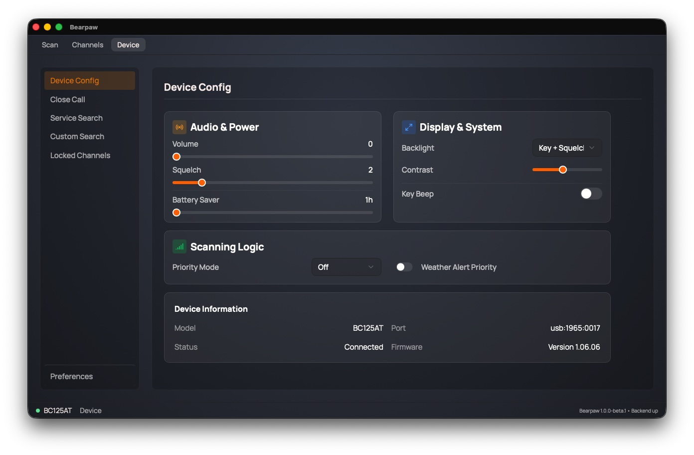
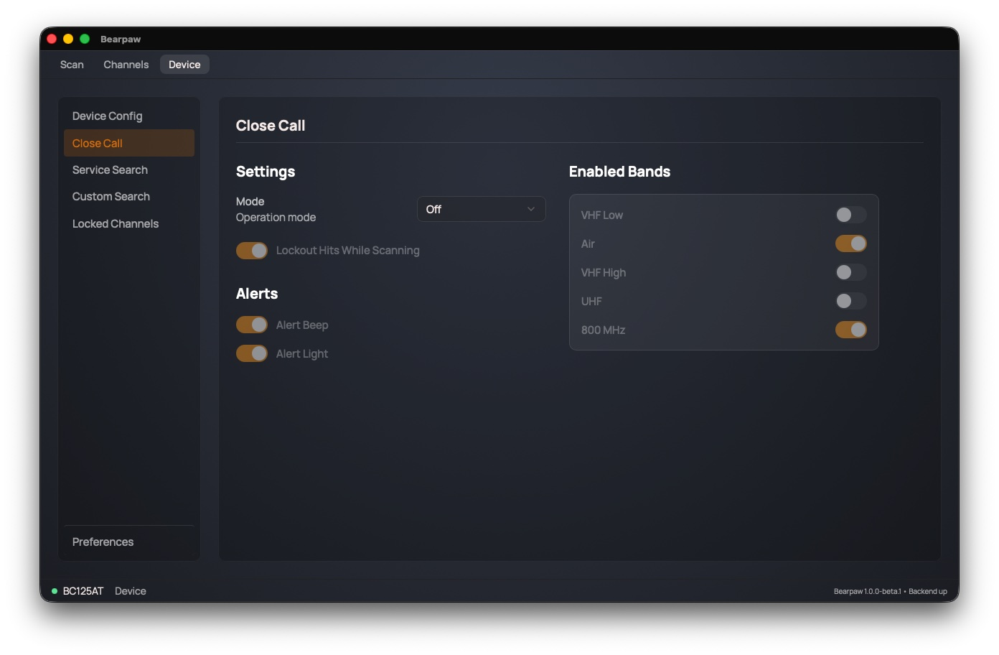
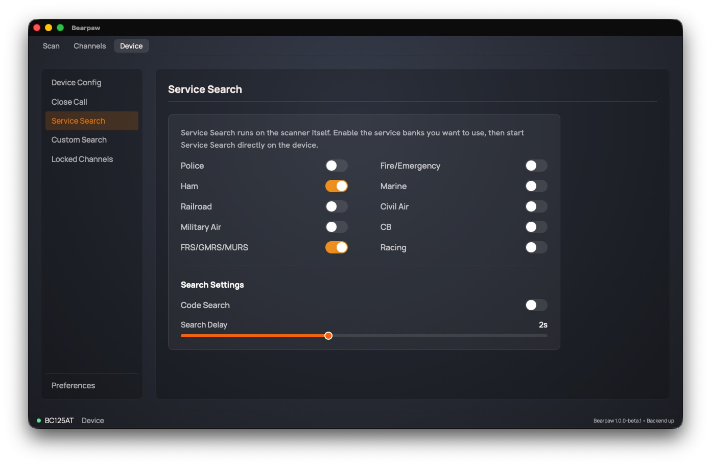
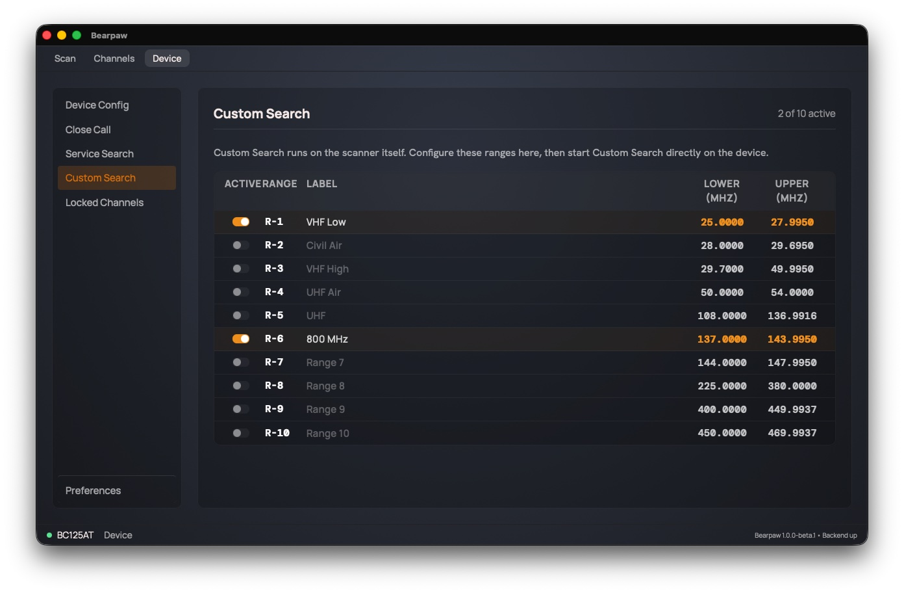
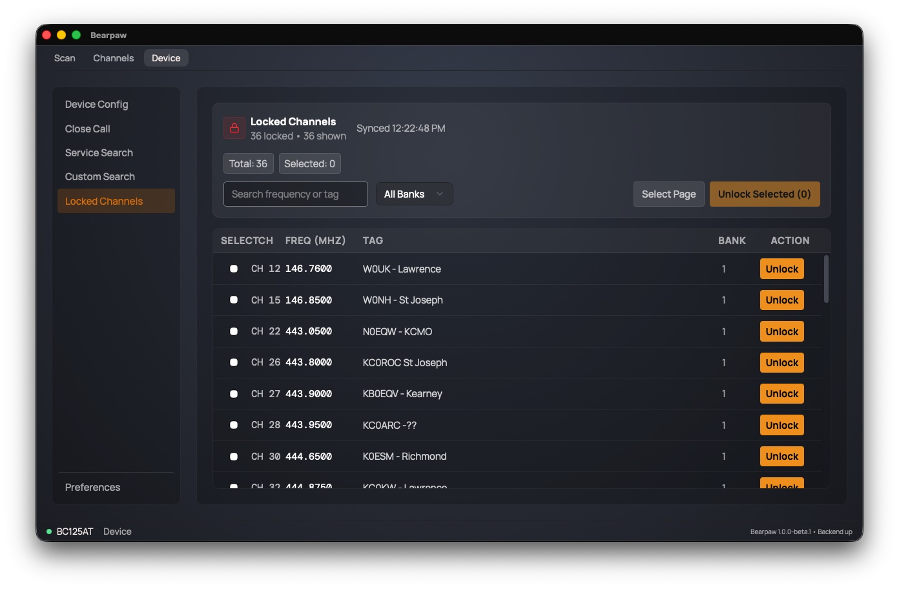
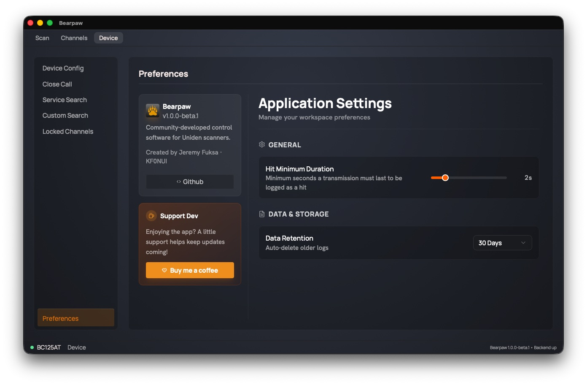

The Device Tab
The Device tab is where you adjust the scanner hardware and where you set a couple of preferences for the app.
Changes to scanner settings apply immediately. There's no Save button. When you move a slider or flip a switch in the first five sections, the app enters the scanner's programming mode to write the change, and live scanning pauses while that write happens. A failed write shows a red error message.
The sections:
- Device Config: the scanner's core settings
- Close Call: nearby-signal detection
- Service Search: factory band presets
- Custom Search: your own frequency ranges
- Locked Channels: the skip list
- Preferences: app settings, not the scanner
Device Config
The scanner's everyday settings, in four cards.

Audio & Power
- Volume: 0 to 15. The scanner's speaker level.
- Squelch: 0 to 15. The gate that mutes background hiss until a signal is strong enough to break through. Too high and you'll miss weak signals; too low and you'll hear constant static. (See squelch.)
- Battery Saver: 1 to 16 hours. The rechargeable-battery charge time the scanner is set for.
Display & System
- Backlight: when the scanner's screen light comes on. Always On, Always Off, Keypress (on a button press), Squelch (when a signal opens), or Key + Squelch (either).
- Contrast: 1 to 15. The scanner's LCD contrast.
- Key Beep: on or off. Whether the scanner beeps when you press its buttons.
Scanning Logic
- Priority Mode: Off, On, or Plus. Priority scan periodically checks your priority channel even while you're scanning or holding elsewhere, so you don't miss traffic on a channel that matters.
- Weather Alert Priority: on or off. Watches for the NOAA weather-service alert tone and interrupts to warn you of severe weather.
Device Information
Read-only, not settings: your scanner's Model, the Port it's on, the connection Status, and the Firmware version. A connection problem shows a diagnostic message here, and a USB issue adds a short troubleshooting checklist.
Close Call
Close Call is Uniden's nearby-strong-signal detector. It listens for a strong transmission from a radio physically close to you, like a handheld at an event, and jumps to that frequency automatically, even if it isn't in any of your channels.

Mode is the master switch, with three settings:
- Off: Close Call disabled.
- CC DND ("Do Not Disturb"): only checks between your normal scanning, so it won't interrupt what you're already listening to.
- CC Priority: checks continuously, interrupting other activity to catch close calls the moment they happen.
When Mode is Off, every other Close Call setting on the page is greyed out.
With a mode active, you can also set:
- Lockout Hits While Scanning: automatically skip a frequency Close Call finds, so it doesn't keep re-triggering on the same one.
- Alert Beep: beep when a close call is detected.
- Alert Light: flash the scanner's backlight when one is detected.
- Enabled Bands: five switches (VHF Low, Air, VHF High, UHF, 800 MHz) choosing which radio bands Close Call watches. Turning off bands you don't care about makes it faster and reduces false hits.
Service Search
The BC125AT has built-in, factory-set frequency ranges for common radio services. Service Search sweeps those ranges without you programming any channels.

You configure the services here, then press the search button on the radio itself to run the search.
Ten on/off switches, one per service: Police, Fire/Emergency, Ham, Marine, Railroad, Civil Air, Military Air, CB, FRS/GMRS/MURS, Racing.
Below them, two search settings:
- Code Search: also decode CTCSS/DCS tones on the signals it finds.
- Search Delay: 0 to 5 seconds. How long the scanner pauses on a found signal after it stops, before resuming.
Custom Search
Custom Search sweeps frequency ranges you define yourself. The scanner supports 10 custom ranges, and the header shows how many are active ("N of 10 active").

Set the ranges here, then start the search on the radio.
Each of the ten rows has:
- An Active switch to include that range in the sweep.
- A Range label (R-1 through R-10) identifying the slot.
- A Label for your own reference (e.g. "Local Ham"). The label stays in the app; it is not written to the scanner.
- Lower (MHz) and Upper (MHz), the start and end of the range. These are written to the scanner.
To set one up: flip a row's Active switch on, type a Lower and Upper frequency, name it if you like, then start Custom Search on the radio.
Locked Channels
A locked-out channel is one you've told the scanner to skip while scanning. This page lists every currently locked-out channel and lets you unlock them.

The list is read from the scanner when you open this section, with a timestamp showing when.
- Search and filter by bank to narrow the list.
- Select channels with their checkboxes, then Unlock Selected to clear them in a batch.
- Or use each row's own Unlock button to clear just that one.
Unlocking brings a channel you'd previously skipped back into the scan rotation. (To lock a channel out, use the L/O button on the Scan tab or the Lockout switch when editing the channel.)
Preferences (app settings)
These settings live in the app on your computer, not the scanner.

- Hit Minimum Duration: 0.5 to 10 seconds. The shortest a transmission must last for the app to record it as a hit in your activity log. Raise it to filter out brief static bursts; lower it to catch quick exchanges. It's an app-side logging filter, separate from how the scanner behaves.
- Data Retention: 30 Days, 90 Days, or 1 Year. How long the app keeps its own activity and analytics logs before automatically deleting the old ones.
The section also has an About card (the app version, and a link to the project on GitHub) and a Buy me a coffee link to support the developer.